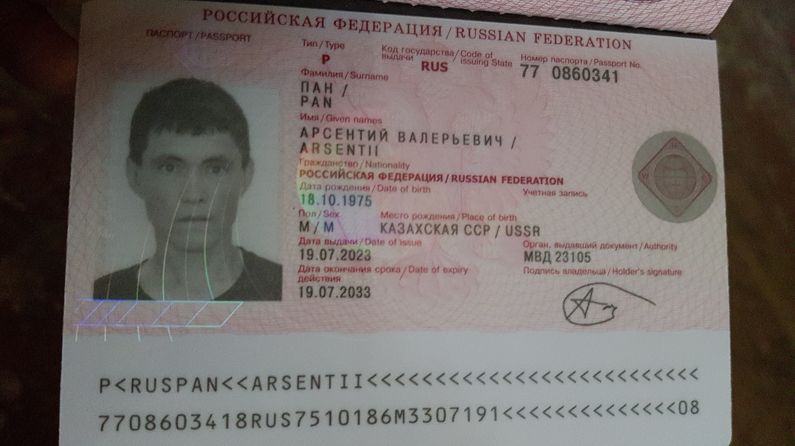

Hier will ich beschreiben, welche Dokumente waren bei mir ganzen mein Weg nach Freiheit.
1. Russland. Pskow
Wie fast jeder Einwohner der Krim habe ich von der Besatzungsmacht russischen Inlandspass bekommen,
aber ohne einen Reisepass lassen die russische Grenzschützer aus dem Russland niemanden;
sobald ich keinen ukrainischen Reisepass hatte, musste ich solchen Dokument,
wie ein russischer Reisepass,
mir
buchen:

Er existiert noch, aber er liegt bei irgendeinem Amt in der Stadt Lodz.
2. Im Lettland
Jedem, der auf solche Weise auf der Flucht in die EU ist, ratet man,
die russische Dokumente zu verbergen. Aber ich lachte über diesen Rat:
So ein Mist,
glaubt jemand, dass ich in 8 Jahren kein Pass von dem Regime bekam, oder?
Die lettische Grenzschützer lobten mich für mein offenes Herz
und lassen mich hinein. Dabei erhielt ich nächstes Papier:

3. Poland
Nach Lettland und Litauen gelang ich am 2. Oktober 2023 nach Polen, aber ich mußte eine Nacht bei Polizei
verbringen. Wegen meinen russischen Dokumente hielten sie mich für einen Spion.
Früh am Morgen des 3. Oktober 2023
brachten mich die Polizisten nach Lodz, wo
man gab mir ein solches Papier statt russisches Reisepasses:


Ich war so schockiert mit polnische Beamte, sie sah'n so streng aus,
dass ich fuhr mit dem Zug nach die westliche Grenze,
stieg aus bei Lauban und
überkreuzte den Fluß Lausitzer Neiße.
4. Deutschland
Am Morgen 4. Oktober 2023 gelang ich nach die deutsche Stadt Görlitz.
Erstens kam ich zu zwei Polizisten und fragte ihnen, ob ich mit diesem Dokument frei
im Deutschland spazieren kann. Sie telefonierten jemand und sagten Ja.
Schnell stieg ich auf mein Fahrrad und fuhr nach Dresden.